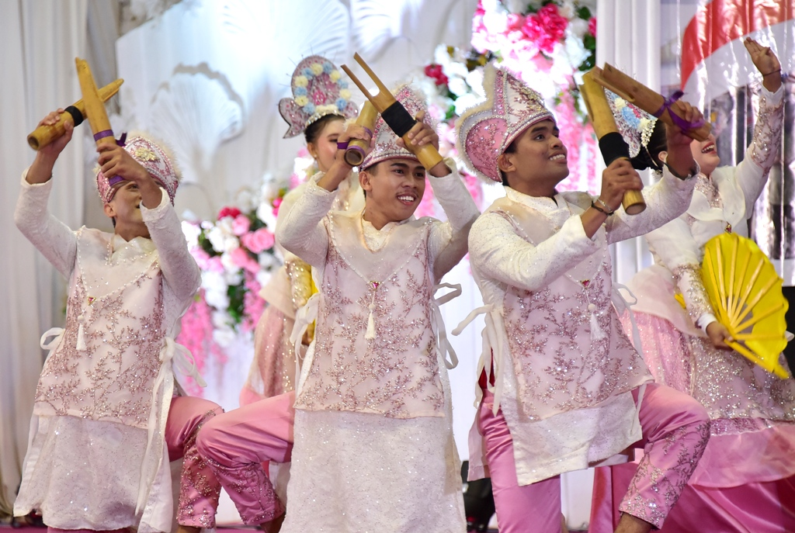
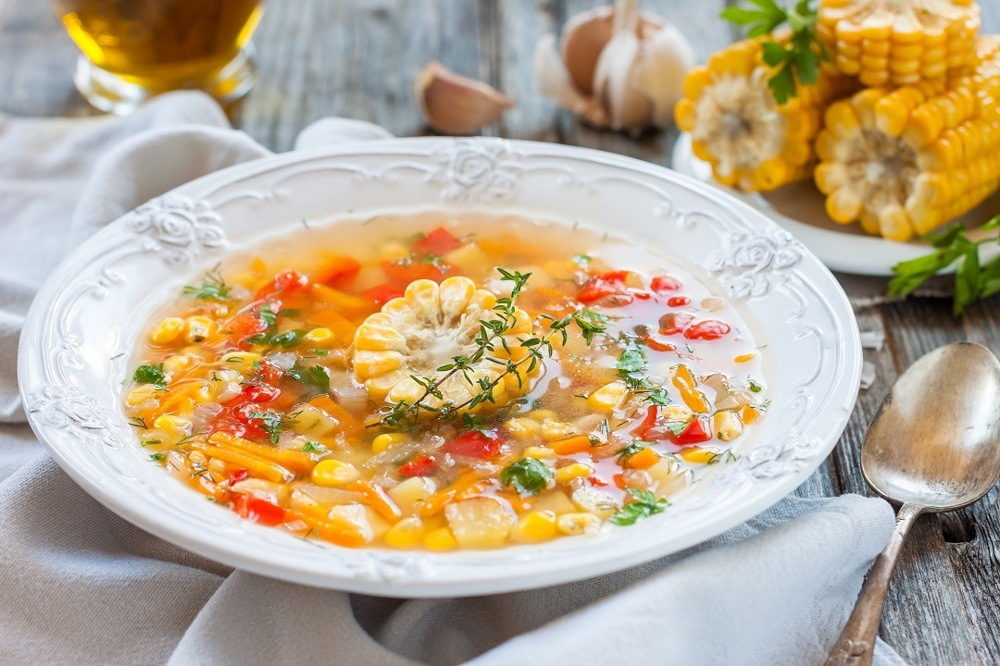

Pesona Gorontalo
Selamat Datang di Serambi Madinah
Rumah Adat Dulohupa

Dulohupa merupakan rumah adat khas Gorontalo yang memiliki filosofi kebersamaan dan musyawarah.
Tarian Polopalo

Tarian tradisional yang menggambarkan kegembiraan dan semangat masyarakat Gorontalo.
Binte Biluhuta

Hidangan khas Gorontalo berbahan dasar jagung muda yang dipadukan dengan ikan dan rempah.
Budaya & Tradisi

Gorontalo kaya akan tradisi seperti upacara Walimah, Malam Pasanga, dan berbagai ritual adat.